Slow days on a tall ship.
Swim, eat well, sail her yourself if you want to, or do nothing at all. For a week or more, the whole ship is yours.
No timetable. Just the wind and the tide.
Luna Moon takes one group at a time: your family, or friends travelling together, up to 11 guests. There's no fixed programme. Tell the captain what your group loves and each day is planned around the weather and your mood.
Most days you sail for a few hours in the morning, anchor somewhere beautiful by lunch and spend the afternoon in the water or ashore.
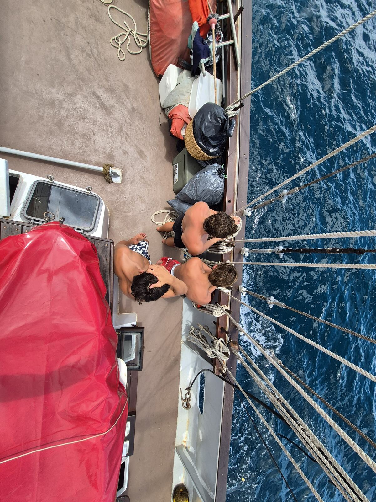
Your chance to crew a tall ship.
Nobody has to lift a finger. But if you or your children want to, the crew will teach you to sail a 115-year-old schooner the way she was meant to be sailed.
- Take the helm and hold her course
- Haul on the halyards as the sails go up
- Learn the knots every sailor uses
- Help drop the anchor and launch the tender
- Keep an evening watch under the stars with the captain
Children are welcome to join in. Help out for an hour, a day or the whole week.
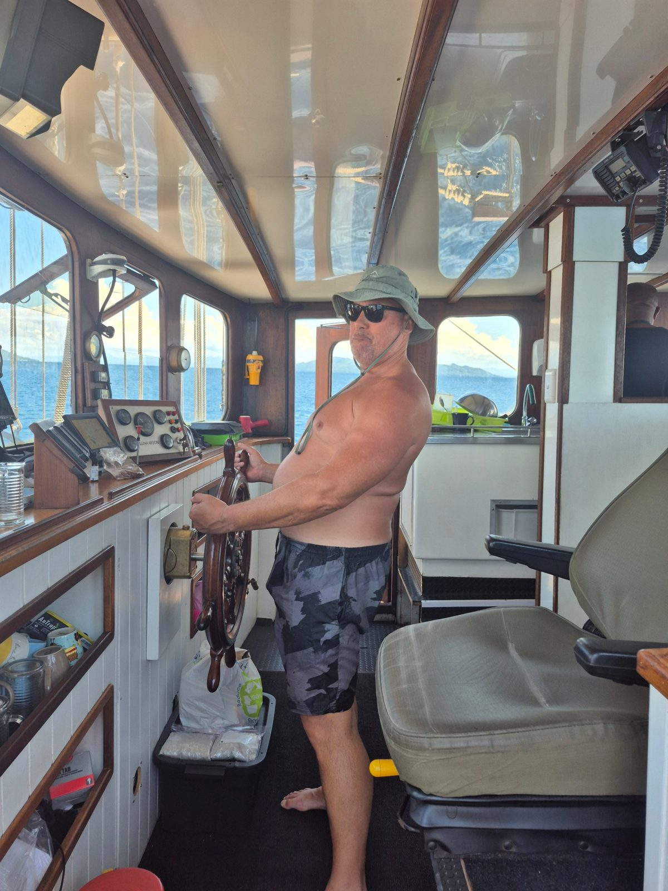
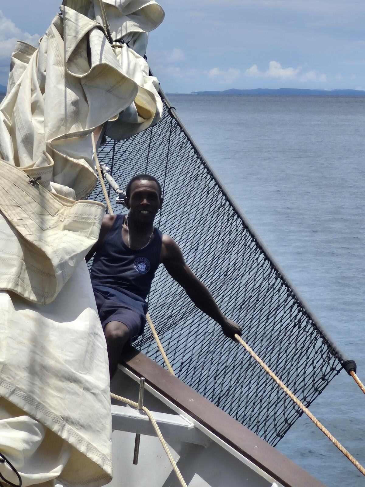
Fresh fish, island fruit, cold drinks at sunset.
The chef cooks with the day's catch, tropical fruit and Malagasy spices. This is vanilla, pepper and ylang-ylang country. Lunch is on deck in the shade. Dinner is at the long table under the stars, or a fish braai on an empty beach.
Sundowners on the aft deck are a ritual: a cold THB beer, a G&T, or a glass of the local rhum arrangé, steeped with vanilla and fruit.
Tell us about allergies, diets and fussy eaters when you book and the menu is planned around your group.
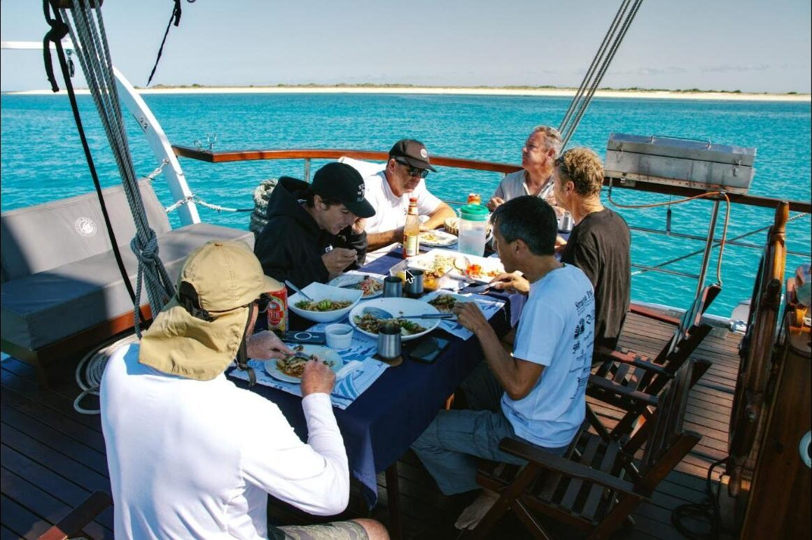
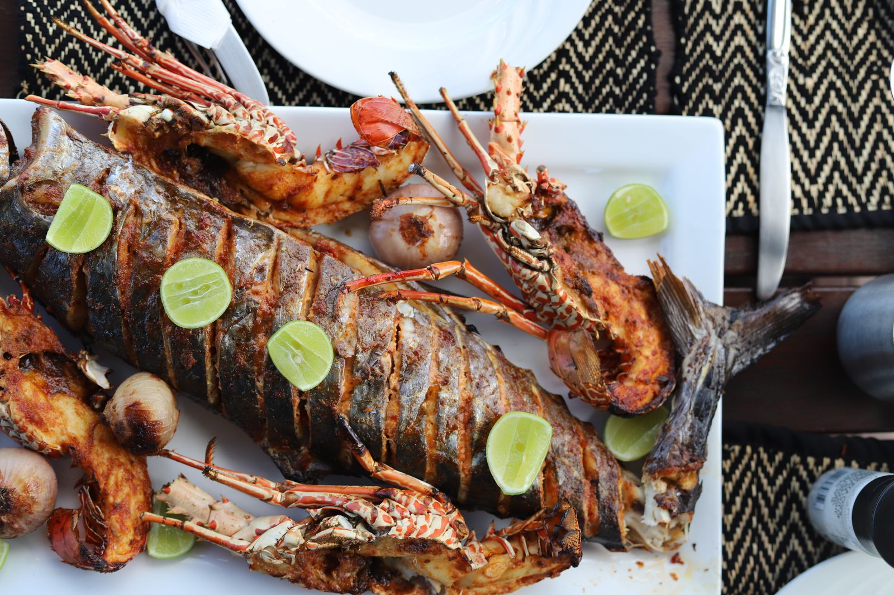
In the water, on the water, ashore.
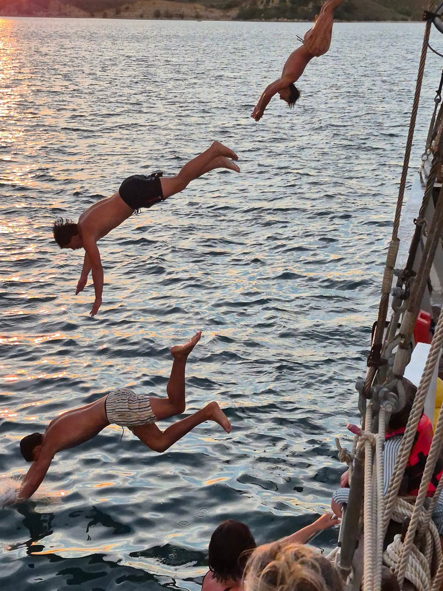
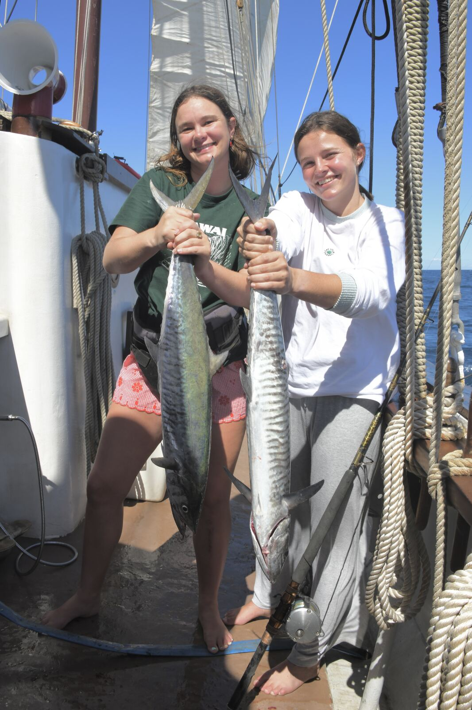
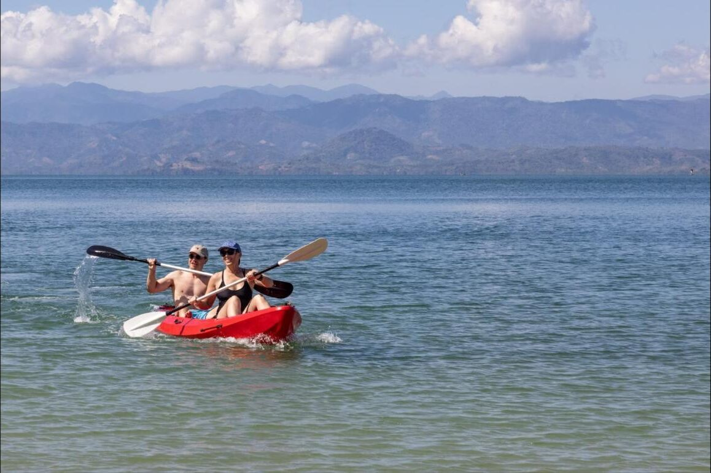

In the water
- Snorkelling over coral reefs
- Jumping off the bow
- Swimming with turtles
- Spearfishing
- Kitesurfing on windy days
On the water
- Kayaking into quiet bays
- Fishing from the deck or tender
- Wakeboarding and water-skiing
- Stand-up paddleboarding
- Sailing the ship with the crew
Ashore
- Black lemurs on Nosy Komba
- Village walks and craft markets
- Eiffel's lighthouse on Nosy Iranja
- Beach braais at sunset
Room to switch off.
A 132-foot deck gives everyone space. Find a cushion in the shade with a book, stretch out on the foredeck while she sails, or swim off the side when it gets hot. No schedule, and nowhere you need to be.
At night you sleep in your own cabin below deck.
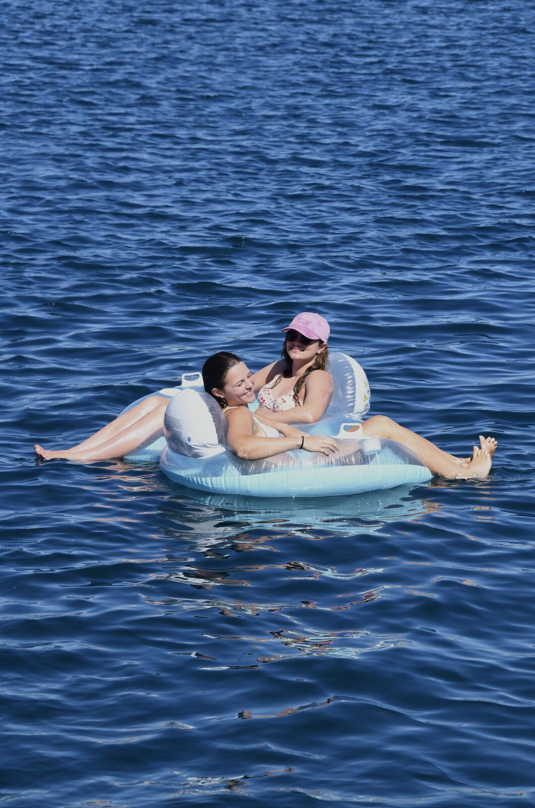
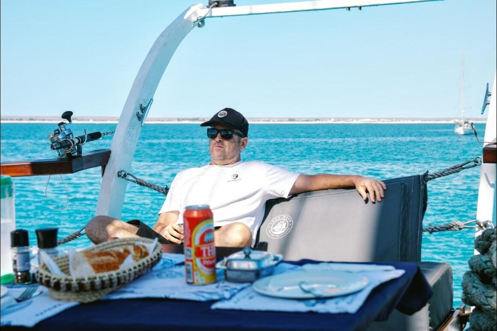
Sail in the morning, swim by lunch.
On a week around Nosy Be, no two days are the same, but most follow the wind and the tide something like this. On the Signature Voyage the passages are longer, so you spend more of each day under sail.
Coffee on deck while the anchorage wakes up.
Breakfast, then sails up for the next island.
Drop anchor off a reef to snorkel, kayak or fish.
Lunch on deck: fresh fish, tropical fruit, local spices.
Go ashore for a village walk, a market or the lemurs of Nosy Komba.
Sundowners on the aft deck, then dinner under the stars.
Islands, reefs and a coast few people see.
See the islands around Nosy Be we sail on week-long charters, and the ten-day Signature Voyage south to Mahajanga.
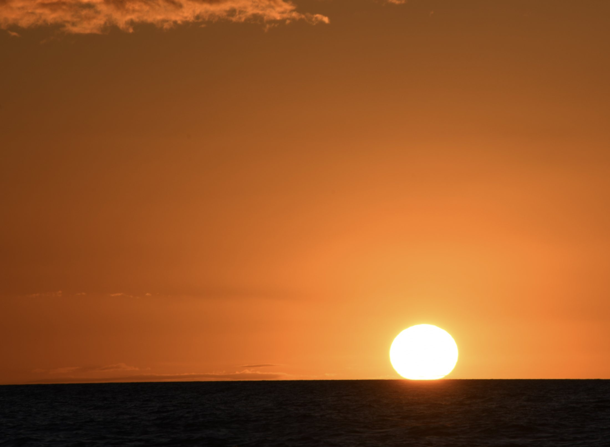
Your adventure starts right here.
Tell us your dates, group size and what you'd like to do. We'll come back with a plan and a quote.